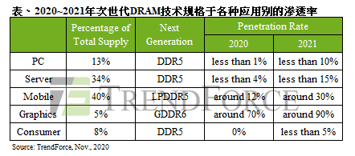

Breaking News
1. U.S. blacklists dozens of Chinese firms including SMIC, DJI(Reuters, 2020-12-18)
The United States added dozens of Chinese companies, including the country’s top chipmaker SMIC and Chinese drone manufacturer SZ DJI Technology Co Ltd, to a trade blacklist on Friday as U.S. President Donald Trump’s administration ratchets up tensions with China in his final weeks in office.
…………
2.SMIC says US sanctions will hurt advanced-chip development(Hivelife, 2020-12-21)
After being added to a US export control blacklist last Friday, Chinese technology giant, Semiconductor Manufacturing International Corp. (SMIC) said Sunday that the sanctions would likely hamper its development of cutting-edge microchip technologies.
Why it matters: As China’s largest chipmaking company, SMIC is spearheading President Xi Jinping and China’s campaign to establish a self-sufficient semiconductor industry, after steadily removing its reliance on American technologies in recent years.
• In a statement, SMIC said that an initial assessment shows that “the US move will badly affect the company’s own R&D and production capacity construction of advanced technologies of 10 nanometers (nm) and below,” according to Nikkei.
• However, SMIC also said that the sanctions would not pose a significant negative impact to the company’s operation and finances in the short term, as it is not currently mass-producing chips that use technologies below 10 nm.
• A press release on the US Commerce Department’s website explained that the Entity List designation would hamper SMIC’s ability to acquire certain US technologies by requiring US exporters to apply for a license to sell to the company.
• In addition, unique items required to produce semiconductors at advanced technology nodes — measuring 10 nanometers or below — will be subject to a presumption of denial to “prevent such key enabling technology from supporting China’s military-civil fusion efforts.”
……
Market Trends
1.DRAM ASP to Recover from Decline in 1Q21, with Potential for Slight Growth(2020-12-10 TrendForce)
The DRAM market exhibits a healthier and more balanced supply/demand relationship compared with the NAND Flash market because of its oligopolistic structure, according to TrendForce’s latest investigations. The percentage distribution of DRAM supply bits by application currently shows that PC DRAM accounts for 13%, server DRAM 34%, mobile DRAM 40%, graphics DRAM 5%, and consumer DRAM (or specialty DRAM) 8%. Looking ahead to 1Q21, the DRAM market by then will have gone through an inventory adjustment period of slightly more than two quarters. Memory buyers will also be more willing to stock up because they want to reduce the risk of future price hikes. Therefore, DRAM prices on the whole will be constrained from falling further. The overall ASP of DRAM products is now forecasted to stay generally flat or slightly up for 1Q21.
PC DRAM prices will be mostly constant as notebook (NB) manufacturers increase procurement activities in response to soaring NB shipment
……
Owing to the power outage at Micron’s Taiwan-based fab and the overall constrained production capacity, server DRAM price forecast for 1Q21 has been revised from relatively flat to slightly increasing
……
Mobile DRAM prices will for the most part trend flat, but smaller smartphone brands may see a slight increase in contract prices
……
……
Graphics DRAM prices are expected to exhibit a minor uptrend, with GDDR6 prices up by about 5-10%
……
Consumer DRAM prices are expected to remain mostly still while DDR3 prices lead the uptick due to reduced supply
……
2021年第一季整体DRAM均价将止跌回稳，价格出现微幅上涨机会(2020-12-10 TrendForce)
根据TrendForce集邦咨询旗下半导体研究处表示，包含PC DRAM（占总供给位元数13%）、Server DRAM（34%）、Mobile DRAM（40%）、Graphics DRAM（5%）以及Consumer DRAM（8%）在内的DRAM领域，因整体属寡占市场型态，供需动能较NAND Flash明显健康许多。在历经超过两季的库存修正后，为减缓预期后续涨价所造成的成本上升，2021年第一季预计买方将开始提高库存水位加以因应，使价格有所支撑，整体DRAM的平均销售单价将止跌回稳，甚至有微幅上涨的可能。
笔电出货畅旺拉升厂商备货动能，PC DRAM价格大致持平
……
产能排挤与美光跳电事件影响，Server DRAM价格将由大致持平转为微幅上涨
……
Mobile DRAM价格大致持平，仅小型品牌厂合约价有上扬可能
……
Graphics DRAM价格小幅上涨，估GDDR6上涨约5-10%
……
Consumer DRAM价格大致持平，DDR3供给减少价格将率先拉涨
……
2. Local Foundry and DRAM Manufacturing Remain Unaffected Following December 10 Earthquake in Taiwan(2020-12-11 TrendForce)
An earthquake that was 6.7 in magnitude occurred off the eastern coast of Taiwan at 9:19 p.m. on December 10. Right after the earthquake had struck, TrendForce immediately began checking the operational statuses of the semiconductor plants in Taiwan and surveying the possible damages resulting from the event. The investigation so far finds that the DRAM fabs on the island have already resumed normal operation following a brief suspension of their production lines. The DRAM fabs in Taiwan are mostly located in the northern and central parts of the island, whereas the epicenter of the earthquake was in the eastern sea of the island. After the tremor had stopped, local DRAM manufacturers temporarily suspended the operation of their production lines to inspect equipment. Currently, they have not reported any significant damages to their plant buildings and equipment. Furthermore, they have all returned to normal production. Hence, the earthquake appears to have not caused any tangible capacity losses for Taiwan’s DRAM industry. Likewise, Taiwanese foundries have not been affected by the earthquake to any meaningful degree.
TrendForce indicates that Taiwan-based facilities account for 21% of the global DRAM production capacity. These local facilities include MTTW (Micron’s Taiwan-based subsidiary), Nanya Technology, and several other fabs that are relatively smaller in scale. On the other hand, Taiwanese foundries, including TSMC, UMC, Vanguard, and PSMC, account for 51% of the global foundry capacity.
…………
2.台湾半导体产业震后调查，DRAM与晶圆代工厂生产无碍(2020-12-11 TrendForce)
台湾东部海域于12月10日晚上9时19分发生规模5.8级地震，TrendForce集邦咨询旗下半导体研究处于第一时间调查台湾半导体各厂受损及运作状况，本次震中位于台湾东部海域，而台湾DRAM产业多集中在北部与中部，地震后各厂都陆续进行停机检查，经确认各厂皆未发现重大机台损害，因此生产方面仍正常运行，并未造成实际重大产能流失，晶圆代工部分状况亦同。
TrendForce集邦咨询指出，以DRAM来看，台湾占全球总产能21%，包含台湾美光晶圆科技（MTTW）、南亚科（Nanya），以及其他较小型厂房的综合产能。而晶圆代工产能占全球比重高达51%，包含台积电（TSMC）、联电（UMC）、世界先进（Vanguard）与力积电（PSMC）等公司综合产能。
…………
3.Micron’s Fab Goes Offline for One Hour, DRAM Prices Go Up(Tom’s Hardware 2020-12-04)
One of Micron’s fabs in Taiwan went offline on Thursday, which startled the market and sent memory spot prices upwards due to supply uncertainty. As a result, while the impact of the disruption is unclear, Micron’s stock upticked. The fab typically pumps out approximately 8.8% of the global DRAM supply.
Micron’s Fab 11, located near Taoyuan City, was taken offline by an unexpected power outage that lasted for a little over an hour. According to United News, the factory immediately activated its safety mechanisms and procedures to avoid casualties and minimize losses. After the power supply resumed, the factory restarted, and the company is now assessing the consequences of the outage.
美光DRAM厂突发停电，影响几何？(全球半导体观察 2020-12-04)
全球市场研究机构TrendForce集邦咨询提供的最新信息显示，12月3日，存储器大厂美光位于台湾林口的晶圆厂发生停电事件，停电时间约1个小时，据了解，此次发生停电事由并非外力(地震、火灾)引起，该公司仍在积极了解停电主因。
…………
据TrendForce集邦咨询资料显示，台湾美光晶圆科技股份有限公司为美光集团位于台湾林口的DRAM工厂，以2020年第四季度全球产能来看，目前该厂的月产能为125K，占全球总DRAM月产能1,418K的8.8%，主要产品以DDR4(PC与server DRAM)及LPDDR4为主。
……
据悉，美光是全球第三大DRAM厂商，TrendForce集邦咨询旗下半导体研究处最新数据，2020年第三季度，多数原厂的营收表现较上季小幅下滑，仅美光逆市上扬，推升全球DRAM厂自有品牌内存营收174.6亿美元，季增长2%。值得一提的是，美光受到出货成长约25%的带动，除营收季增21.9%以外，其第三季市占也提升至25%。
从产能来看，这次受停电冲击的晶圆厂，占美光产出的30%以上，且该工厂是美光的服务器DRAM生产重镇。TrendForce集邦咨询认为，在当前DRAM市况已经日益转趋吃紧的态势下，此次停电事件造成的影响不容小觑。
4.2021 年準備迎接記憶體成長週期，各廠商摩拳擦掌(科技新报 2020-12-22)
根據外媒報導，隨著 2021 年全球三大記憶體廠陸續將大規模量產下一代 DDR5 DRAM 的情況下，預計記憶體市場將迎接下一個成長週期，這使得三星、SK 海力士、美光等三大記憶體公司正在加緊技術開發，以面對市場競爭而搶攻市占率。
根據南韓媒體《BusinessKorea》報導，全球記憶體產業龍頭的南韓三星電子計劃在 2021 下半年正式推出 DDR5 DRAM。相較於當前產品 DDR4 的規格，DDR5 DRAM 的傳輸速率可高達 6,400 Mbps，是 DDR4 DRAM 的 3,200 Mbps 的 2 倍。另外，DDR5 的工作電壓為 1.1V，比 DDR4 的 1.2V 降低 9%。DDR5 最大容量為 64 Gb，是 DDR4 產品 4 倍。因為性能突出，使 DDR5 產品即便稍高於 DDR4，但因為世代交易的市場需求下，仍有空間為記憶體廠帶來獲利，這也是預期全球記憶體產業將迎接新成長週期的主因。
報導強調，根據市場研究及調查單位 TrendForce 預測，DDR5 在 PC DRAM 市場中的市占率，將從 2020 年的不到 1%，成長到 2021 年 10%，足足是 10 倍以上的成長。甚至， DDR5 產品在伺服器的 DRAM 市場中，市佔率也將從 2020 年的 4% 提升到 2021 年 15%。市場成長快速情況下，全球三大記憶體廠都開始準備搶攻商機。南韓 SK 海力士已在 10 月 6 日首次發表 DDR5 DRAM，競爭對手三星則預計 2021 年開始量產第 4 代 10 奈米級 DDR5 和 LPDDR5。美商記憶體大廠美光今年初宣布，已開始向客戶出樣最新 DDR5 記憶體，以第 3 代 10 奈米級 1z 奈米製程打造，性能提升 85%。
……

Vendor News
1.Micron Technology Speeding up Development of EUV-based DRAMs(BusinessKorea 2020-12-23)
Micron Technology of the United States is speeding up the development of DRAMs using extreme ultraviolet (EUV) lithography. It is joining a race that was initiated by the world’s first- and second-ranked DRAM manufacturers – Samsung Electronics and SK Hynix.
Micron Technology is looking for engineers who will be in charge of developing EUV facilities through various recruitment sites. The engineers will be tasked with developing EUV scanner technology, managing new EUV equipment and communicating with ASML, the world’s only producer of EUV equipment.
……
Micron suggested in a recent announcement that it may not apply EUV technology even to next-generation DRAM ‘1-beta’ products in light of high costs and technical limitations.
Scott DerBauer, vice president of Micron, said that the company will introduce an EUV process to production of 1-delta products.
2.China’s First Self-Developed Memory Chip Maker Scores Financing(chinamoneynetwork, 2020-12-18)
China’s first self-developed memory chip project received financial support, but it remains uncertain if the project can achieve its technology and financial objectives.
On December 14, China’s National Semiconductor Fund, Anhui State-owned Assets, GigaDevice, an entity controlled by ChangXin Memory Technologies’ chairman Zhu Yiming, Xiaomi Yangtze River Industry Fund and other institutions invested in Changxin’s parent company Ruili Integrated Circuit Co., Ltd.
This latest round of financing introduced a number of investors outside of Hefei’s State-Owned Assets, and the financing reached RMB15.65 billion yuan.
……
长鑫存储完成156亿元融资，国产内存加速跑！(全球半导体观察 2020-12-16)
DRAM厂商长鑫存储完成156亿元融资，内存芯片的国产替代之路又获资金助力。12月14日，工商信息显示，大基金二期、安徽国资、兆易创新及另一家朱一明实控企业、小米长江产业基金等机构入股长鑫存储母公司睿力集成电路有限公司，融资价款达到156.50亿元。
根据兆易创新公告，长鑫存储是睿力集成的全资子公司，也是目前国内唯一量产国产DRAM内存的厂商，其第一大股东石溪集电的执行事务合伙人为石溪长鑫,石溪长鑫的实际控制人即兆易创新实控人朱一明。
……
长鑫存储主攻DRAM，今年2月，长鑫存储宣布研发出DDR4及LPDDR4X两种存储器，采用19纳米制程，这也是我国第1颗自研DRAM芯片。5月，多款搭载长鑫存储10纳米级DDR4芯片的内存条上市，真正掀开国产内存新篇章。
……
除了自主研发，长鑫存储一直借助收购的方式提升技术。2019年12月，长鑫存储和加拿大公司Wi-LANInc.。这家从英飞凌手上收购大笔奇梦达专利的公司达成协议，长鑫获得了1000多万份有关DRAM的技术文件及2.8TB数据依据专利许可协议。
今年4月，据长鑫存储微信公众号消息，长鑫存储技术有限公司与美国半导体公司Rambus签署了专利许可协议。依据此协议，长鑫存储从Rambus获得了大量DRAM技术专利的实施许可
……
3.首只国产ArF光刻胶通过验证！(全球半导体观察 2020-12-18)
12月17日，南大光电公告，公司控股子公司宁波南大光电自主研发的ArF光刻胶产品近日成功通过客户的使用认证。
“ArF光刻胶产品开发和产业化”是宁波南大光电承接国家“02专项”的一个重点攻关项目。该项目总投资6亿元，完全达产后，预计实现约10亿元的年销售额，年利税预计约2亿元。
按不同制程，半导体用光刻胶可分为EUV光刻胶、ArF光刻胶、KrF光刻胶及G线、i线光刻胶，前三者均为高端光刻胶产品。本次产品的认证通过，标志着“ArF光刻胶产品开发和产业化”项目取得了关键性的突破，成为国内通过产品验证的第一只国产ArF光刻胶。
……